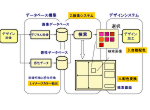
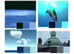
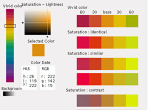
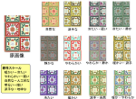
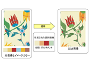
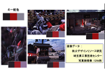

Kansei Information Processing
Introduction to My Research Papers
This page introduces research on design support systems using kansei information, image feature extraction, index color extraction, harmonious color scheme generation using angle-based color harmony methods, color transformation using index colors and kansei scales, color harmonization, and image retrieval using index colors. One student who worked on color scheme research obtained a doctoral degree in this field.
Kansei Information Processing
感性スケール、画像特徴、感性検索

This research belongs broadly to the field known as kansei information processing or kansei engineering. This field began to emerge in the 1990s, but our research started before these topics became widely recognized, through joint research with the Saitama Textile Research Institute.
The starting point was a request to develop a method for searching a database of many design images held by the textile institute. Designers wanted a more intuitive search method, rather than entering explicit kansei keywords. Therefore, we organized the overall image design system and constructed a system in which designers could refer to many digital design images during the design process. A key issue was clarifying the relationship between human kansei and image features.
Based on these studies, Masato Ishii developed a practical system for extracting kansei information from apparel patterns and completed a doctoral dissertation.
(1) 感性スケールを利用した感性検索とデザイン支援システム
- 黒田章裕,近藤邦雄,猪原徹,諸原雄大,佐藤尚,島田静雄,中島規之,竹内了, テキスタイル画像データベースの感性検索とデザインのための統合化システムとその応用, 第９回NICOGRAPH論文コンテスト論文集, pp.113-122, 1993
- 近藤邦雄,伊藤素子,猪原徹,佐藤尚,島田静雄, 感性検索のためのボロノイ図の応用, 図学研究,第72号, pp.19-26, 1996
- 木造利徳, 近藤 邦雄, 佐藤 尚,島田 静雄, 感性言語によるデザイン画の分類と検索システムの構築, 情報処理学会, 全国大会講演論文集 第44回平成4年前期(2), pp.317-318, 1992.2.24
- 黒田章裕,近藤邦雄,佐藤尚,島田静雄, デザイン画データベースとイメージ語検索, 感性工学研究フォーラム, シンポジウム講演論文集,1994
- 近藤邦雄,猪原徹 黒田章裕,伊藤素子,佐藤尚,島田静雄, 感性検索を用いたデザイン画データベースシステム, 感性工学研究フォーラム, シンポジウム講演論文集,1994
- 黒田章裕,近藤 邦雄,木造 利徳,佐藤 尚,島田 静雄,加藤 陽一, 形容詞対スケールによるデザイン画像の分類, テレビジョン学会, 技術報告 16(31), pp.19-24, 1992.5.29
- 黒田章裕,近藤邦雄,島田静雄,佐藤尚,猪原徹, イメージ語によるデザイン画像データの分類, 情報処理学会,第46回全国大会講演論文集 4-79,1993
- 近藤邦雄,猪原徹,佐藤尚,島田静雄,画像特徴量を用いた感性データベースの構築,埼玉大学紀要工学部第29号, pp.9-21,1996
(2) 画像特徴量を用いた感性情報の抽出
- T. INOHARA, K. KONDO, H. SATO, S. SHIMADA, Retrieval Method of Textile Pictures Database Using a Complexity Scale, ICDAR'93, pp.699-702, 1993
- T. INOHARA, K. KONDO, H. SATO, S. SHIMADA, Classification of Textile Pictures Using a Complexity Scale, ACCV'93, pp.51-54, 1993
- N. UTSUNO, T. INOHARA, Y. MOROHARA, K. KONDO, H. SATO, S. SHIMADA, Analyses of Graphical Features of Textiles by Human Impressions, Proc. of IAPR Workshop on MVA, pp.307—310, 1994
- 猪原徹,近藤邦雄,佐藤尚,島田静雄, デザイン画の色と形の複雑特徴量による分類, 情報処理学会第46回全国大会講演論文集 4-75,1993
- 宇津野 直木,猪原 徹,近藤 邦雄,佐藤 尚,島田 静雄, 画像特徴量を用いた感性情報の抽出, 情報処理学会, 第48回全国大会講演論文集 4-129,1994
- 宇津野 直木,猪原 徹,諸原 雄大,近藤 邦雄,佐藤 尚,島田 静雄, デザイン画の感性特徴と画像特徴, テレビジョン学会, 技術報告, Vol.18, No.27, pp.7-12 ,1995
- 近藤邦雄,張暁紅,宇津野直木,佐藤尚,島田静雄,デザイン画像の感性特徴と画像特徴,日本図学会,1996年度大会学術講演論文集,1996
(3) アパレル図柄の感性情報抽出システム
- Masato Ishii, Kunio Kondo, Extraction System of Kansei Information for Patterns, Proceedings of the 8th ICECGDG, Vol.2, pp.405-410,1998
- 石井眞人,近藤邦雄,佐藤尚,島田静雄, 印象語によるチェック柄分類の試み,日本図学会, 図学研究70号, pp.3-11, 1995
- 石井眞人 近藤邦雄, 図形の構成要素と印象の抽出 -アパレルチェック柄を中心にして- ,日本図学会,図学研究,第77号, pp.9-16,1997
- 石井眞人, 近藤邦雄, アパレル図柄の感性情報抽出システム,日本図学会,図学研究,Vol.32,No.3,pp.27-34,1998
Doctoral Dissertation
Index Color of a Digital Image
デジタル画像のイメージカラー抽出手法と感性スケール

One way to represent the characteristics of an image is to use several dominant colors. In design fields, three or four colors that express the impression of a photograph are often called image colors or index colors. Traditionally, such colors were selected by people. This research analyzed the relationship between physical color quantities and human kansei, and proposed a computational method for extracting prominent colors from images. It also clarified the relationship between image colors and kansei scales.
(1) デジタル画像のイメージカラー抽出
- Y. MOROHARA, K. KONDO, H. SATO, S. SHIMADA, Automatic Picking of Index Colors in Textile Pictures for Designer, Proc. of ICECGDG'94, pp.643-647, 1994
- 諸原雄大,近藤邦雄,島田静雄,佐藤尚, テキスタイルデザイン画像におけるイメージ･カラーの選定法, 情報処理学会, 情報処理学会論文誌, Vol.36, No.2, pp.329-337, 1995
(2) イメージカラーと感性スケール
- 諸原雄大,近藤邦雄,佐藤尚,島田静雄, 色彩の感性言語スケールによるデザイン画像の自動分類, 情報処理学会,第46回全国大会講演論文集 4-77,1993
- 諸原雄大,近藤邦雄,佐藤尚,島田静雄, デザイン画像の色彩と形容詞対スケールの関係, テレビジョン学会,技術報告,ITE Technical Report,1993
Angle-Based Color Harmony Method and Color Design Support
角度配色法と配色デザイン支援

Designers often decide color schemes based on color harmony theories, especially angle-based color harmony methods. However, textbook color harmony theories mainly focus on hue, while actual design work also considers brightness and saturation. This research analyzed expert color design processes and clarified calculation methods for brightness and saturation based on color harmony theory. As a result, it proposed a method for presenting multiple harmonious color scheme candidates based on a specified base color.
(1) 角度配色法による配色支援
- 町田芳明, 近藤邦雄,野沢徳生,角度配色法による配色デザイン法 ,日本図学会,1998年度大会学術講演論文集,pp.85-90,1998.5
- 今橋浩樹,高橋雅博,近藤邦雄,町田芳明,配色支援システム'彩'（AYA）を用いた画像生成 ,画像電子学会・情報処理学会,Visual Computing/グラフィクスと CAD 合同シンポジウム 2003, pp.111- 116,2003.6
- 今橋浩樹,高橋雅博,近藤邦雄,町田芳明,配色支援システム彩と画像生成への適用,芸術科学会, NICOGRAPH2003,2003.5
(2) 配色を利用したデザイン支援システム
- 近藤邦雄,高橋雅博,松永政尚,山嵜秀樹, 画像データベースのためのイメージカラー検索手法, 映像情報メディア学会, 映像情報メディア学会誌, Vol.54,No.11, pp.1615-1622,2000
- 高橋 雅博,近藤 邦雄, ネットワークを利用したデザイン支援システムの構築, 日本図学会,1999年度大会研究発表会1999.5.8
- 高橋雅博,近藤邦雄,ネットワーク上の分散デザインリソースの編集システム ,日本図学会,年次大会,2000.5
After our research presentations, several color harmony systems were also released. One example is Color Scheme Designer, which provides various examples of color schemes.
Doctoral Dissertation
Changing Color Scheme with Kansei Scales
感性スケールを用いた配色変換

- Hideki Yamazaki , Kunio Kondo, A Method of Changing a Color Scheme with Kansei Scales, Journal for Geometry and Graphics, Vol.3, No.1, pp.77-84,(Selected paper of ICECGDG),1999
- Hideki Yamazaki, Kunio Kondo, A Method of Changing a Color Scheme with Kansei Scales, Proceedings of the 8th ICECGDG, Vol.1, pp.210-214,1998
- 諸原雄大,近藤邦雄,佐藤尚,島田静雄,配色スケールを用いた配色変換システム,情報処理学会,第50回全国大会講演論文集(2), pp.33-24,1995
- 山嵜秀城,近藤邦雄,佐藤尚, JAVAを利用した感性による配色変換法,日本図学会,1997年度大会（東京）学術講演論文集,pp.23-26,1997
Color Harmonization
調和配色手法を利用した画像の配色変換

This research developed from the study “Changing Color Scheme with Index Color.” It proposed a method for extracting index colors from an image, transforming the color scheme, and applying the transformed scheme to the input image.
- Hiroki IMAHASHI, Kunio KONDO, Yoshiaki MACHIDA ,Masahiro TAKAHASHI, Knowledge Based Color Coordinate System and its Application, Asia Digital Art and Design Association, International Journal of ADADA, Vol.1, pp.37-42, 2004.4
- Hiroki IMAHASHI, Kunio KONDO, Yoshiaki MACHIDA, and Masahiro TAKAHASHI, Knowledge Based Color Coordinate System and its Application, Asia Digital Art and Design Association, Proceedings of the 1st annual conference of Asia Digital Art and Design Association, pp.72-73,2003.9
- 今橋浩樹,高橋雅博,近藤邦雄,町田芳明,配色支援システム'彩'（AYA）を用いた画像生成 ,画像電子学会・情報処理学会,Visual Computing/グラフィクスと CAD 合同シンポジウム 2003, pp.111- 116,2003.6
- 今橋浩樹,高橋雅博,近藤邦雄,町田芳明,配色支援システム彩と画像生成への適,芸術科学会, NICOGRAPH2003,2003.5
This research had been one of our goals since our earlier studies on harmonious color schemes and angle-based color harmony methods around 1987. A related study titled Color harmonization was later presented at SIGGRAPH 2006.
Daniel Cohen-Or, Olga Sorkine, Ran Gal, Tommer Leyvand, Ying-Qing, Color harmonization, ACM Transactions on Graphics, Proceedings of ACM SIGGRAPH 2006, Volume 25, Issue 3, pp.624-630, 2006.
Image Retrieval Using Index Color
イメージカラーによる画像検索

The purpose of this research is to propose image retrieval methods using index colors that represent image characteristics. By using image colors, which are one way to express human impressions accurately, the system can retrieve images with similar color impressions. Search using a single color is now common in services such as image search engines, but methods that represent impressions through color schemes are expected to become increasingly useful.
- 近藤邦雄,高橋雅博,松永政尚,山嵜秀樹, 画像データベースのためのイメージカラー検索手法, 映像情報メディア学会, 映像情報メディア学会誌, Vol.54,No.11, pp.1615-1622,2000
- 諸原雄大,近藤邦雄,島田静雄,佐藤尚, テキスタイルデザイン画像におけるイメージ･カラーの選定法, 情報処理学会, 情報処理学会論文誌, Vol.36, No.2, pp.329-337, 1995
- 近藤邦雄,高橋雅博, 画像データベースのためのイメージカラー検索手法, 画像ラボ, Vol.12,No.6, pp.39-43, 2001.6
Back to Geometric Modeling Next: Computer Animation Back to Research Topics Back to Research